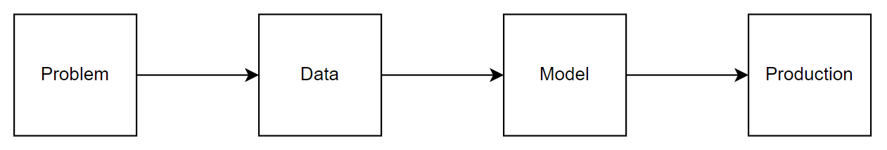

Overview#
An AI project consists of 4 parts:
Problem#
Overview: Define the problem, the goal, and the expected inputs & outputs.
Scope: Identify constraints.
Data: #samples, #features, types, etc.
Model constraints:
Priority: Performance / Quality
Type: Single general / Multiple specific
Interpretability
Retrainability
…
Resource constraints:
Time: Training, inference, project duration, etc.
Computation: Training, inference, local/cloud, etc.
Evaluation: Define success measurement.
Automatic metrics:
Offline: MSE, P/R/F1, etc.
Online: Usage time, usage frequency, click rate, etc.
Human metrics: User interaction, recent reports, company intention for users, personalization, etc.
Data#
Type
Features: User, content, context, etc.
Targets: Explicit (direct), implicit (indirect).
Availability
Status: Available/unavailable, quantity, etc.
Annotation: Quality, cost, resolving disagreements, feasibility of auto-annotation, etc.
Privacy: User data accessibility, methods, online/periodic data use, anonymity, etc.
Logistics: Storage location, structure, biases, etc.
Modeling#
For each model, specify:
Why: Motivation
What: Functionality
How: Objective and optimization
When: Assumptions
Pros & Cons
Procedure:
Baseline: Stats (mean, median, mode), random benchmarks, etc.
Easy model
Hard model
Experiment, evaluation & ablation study
Production#
Performance can degrade in production due to:
Data Drift: Production data \(\neq\) training data.
Feature Drift: Changes in features or feature transformations.
Concept Drift: Changes in the relationship between features & target variables, especially in a dynamic environment.
Data Quality: Missing values, outliers, noise, etc.
Model Versioning: R&D models \(\neq\) deployed models.
Scaling & Latency: Handling large data volumes and fast response times.
Ethics: Adversarial attacks, privacy concerns, regulatory compliance, interpretability, etc.
Others: Random errors (e.g., network issues).
Consider these factors for production:
Inference location:
Local: High memory/storage usage, low latency.
Server: Low memory/storage usage, high latency, privacy concerns.
Feature serving:
Batch: Handled offline, served online with periodic data generation/collection.
Real-time: Handled & served online at request time, prioritize scalability & latency, use feature stores and caching.
Performance Monitoring: Errors, latency, biases, data drift, CPU load, memory usage, retrain frequency, etc.
Online A/B Testing#
Define Objective: Improve click-through rates, increase sign-up rates, etc.
Significance level \((\alpha)\): Threshold for statistical significance.
\(\alpha=P(FP)\) (i.e., Type I error): Probability of rejecting a true \(H_0\).
Common values: 0.05, 0.01.
Lower \(\alpha\) makes difference detection harder.
Power \((1-\beta)\): Probability of rejecting a false \(H_0\).
\(\beta=P(FN)\) (i.e., Type II error): Probability of not rejecting a false \(H_0\).
Common value: 80%.
Higher power requires larger sample size.
Create Variations: Generate versions to test (e.g., button designs: blue round (control) vs green square (treatment)).
Calculate Traffic: Calculate required sample size per variation: $\( m=2\times\left(\frac{Z_{\frac{\alpha}{2}}+Z_{\beta}}{\text{MDE}}\right)^2\times p(1-p) \)$
Baseline conversion rate (\(p\)): Event occurrence rate in control.
Minimum Detectable Effect (\(\text{MDE}\)): Smallest detectable difference.
e.g., For \(p\)=10% and desired 2% improvement, \(\text{MDE}\)=20%.
Ensure both groups are statistically similar.
Splitting: Randomly assign users to control and treatment.
User-level: Users consistently see the same variation.
Pros: Useful for long-term impact, reduces bias.
Request-level: Randomly determine variation per user request.
Pros: Useful for short-term impact, captures immediate or session-specific impact of the tested variations.
Measurement & Analysis:
Track user interactions & conversions for both groups.
Compare performance using statistical analysis.
Determine if differences are statistically significant.